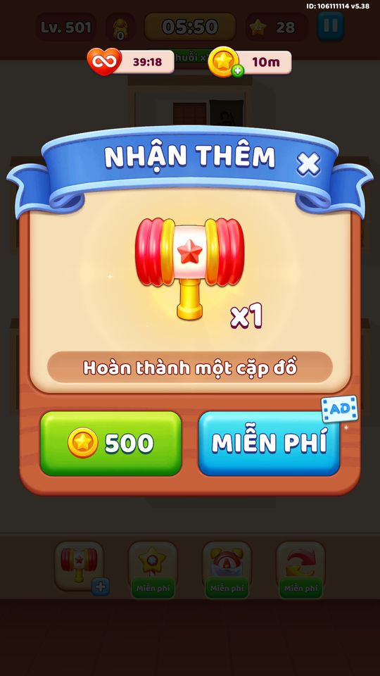
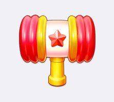
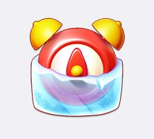

Ảnh chụp màn hình
Bốn vật phẩm dùng ngay khi đang chơi màn.
Mô tả
- Power-up là vật phẩm dùng ngay trong khi chơi màn (khác với booster chọn trước).
- Hammer (BreakItem) hoàn thành 1 bộ match-3 hoặc phá bom; Time Freeze (Freeze) đóng băng đồng hồ màn 15 giây.
- Magic Wand (Replace) biến 9 ô thành 3 bộ match; Refresh (Swap) xáo lại toàn bộ hàng trên bàn khi bế tắc.
- Kho power-up lưu trong save 'power_up'; có bản miễn phí từ tutorial/sự kiện, hết thì mua thêm hoặc xem quảng cáo (giới hạn theo màn).
Thiết kế chi tiết
Tóm tắt thiết kế
Code Búa (tự ghép 1 bộ / phá bom), Đóng băng (dừng đồng hồ 15 giây), Đũa (biến 9 món thành 3 bộ), Đổi chỗ (xáo toàn bàn). Mở ở màn 2 / 9 / 6 / 4 (A/B FTUE đổi được).
Playtest Hết thì popup “Nhận thêm”: 1 cái = 500 vàng hoặc Miễn phí (xem quảng cáo). Mua bằng vàng là dùng ngay.
Playtest Dùng Búa liên tục dọn được cả màn (playtest dùng cách này để vượt màn 501–503, khoảng 50–150 lần mỗi màn vì có nhiều lớp).
Luồng người chơi từng bước
- Hết power-upGiao diện PlaytestPopup Nhận thêm Búa ×1: 500 vàng hoặc quảng cáo.

Nhận thêm: 500 vàng hoặc quảng cáo 
Sprite Búa


Vận dụng cho game khác
- Cho mua power-up lẻ ngay trong màn với giá vàng thấp và lựa chọn quảng cáo song song: hai đường đều kéo người chơi ở lại màn.
Bảng tổng hợp mọi tính năng đã làm chi tiết: GoodsSort_ThietKeChiTiet.xlsx.
Còn thiếu / chưa xác minh
Mở khóa & điểm vào
Mở dần theo màn. GetLevelUnLockPowerup(kind) đọc mảng tĩnh: mặc định (abTestFTUE<=0) = {Hammer:2, Freeze:9, Swap:4, Replace:6}; biến thể A/B (abTestFTUE>0) = {4,8,10,6}. numPowerupInit=1 (remoteconfig_defaults.tsv). Xem quảng cáo nhận powerup mở từ levelUnlockWatchAdsToGetPowerup=1.
Điểm vào:
- Các nút power-up ở đáy màn chơi
- Popup 'mua thêm power-up' khi hết (UIPopup_PowerUp_GetMore)
- Popup 'mở khóa power-up mới' khi tới màn unlock (power_up_new_unlocked)
- Nút xem quảng cáo nhận power-up trong màn
Cách hoạt động
- Bấm nút: ActivePowerup/AddPowerupToQueue kiểm tra IsUnLockPowerup + CanUsePowerup.
- Đủ điều kiện: UserPowerup trừ kho (MinusPowerupFree trước MinusPowerup) và chạy hiệu ứng.
- Hiệu ứng: PowerupBreakItem (1 match/bom), PowerupFreeze -> LevelController.AddTimeFreeze(15), PowerupReplace (9 ô -> 3 match), PowerupSwap (refresh bàn).
- Thiếu hàng: mở UIPopup_PowerUp_GetMore để mua/nhận thêm.
- Mở khóa theo màn qua GetLevelUnLockPowerup; tutorial tặng 1 bản dùng thử (AddItemForTut).
Luồng chi tiết theo code
Init()/InitData() đọc save 'power_up'; chưa có thì đặt numPowerupInit từ RemoteConfig (key pow_init), server reset qua 'powerup_remote'. Awake() của PowerupInGameController đọc RemoteConfig.numAdsPowerupPerLevel để giới hạn số power-up nhận-qua-ads mỗi màn (_numAdsPowerupPerLevel, powerupAdRemain). Khi người chơi bấm nút: ActivePowerup(kind) hoặc AddPowerupToQueue(kind) -> kiểm tra IsUnLockPowerup(kind) và CanUsePowerup(kind): nếu đủ thì UserPowerup(kind, 1, where) trừ kho (ưu tiên bản free: MinusPowerupFree trước MinusPowerup) và chạy hiệu ứng tương ứng; nếu không đủ thì mở UIPopup_PowerUp_GetMore. Hiệu ứng: PowerupBreakItem hoàn thành 1 match (hoặc phá bom), PowerupFreeze gọi LevelController.AddTimeFreeze(GetTimeFreeze()=15) đóng băng giờ 15 giây, PowerupReplace biến 9 ô thành 3 match, PowerupSwap refresh toàn bộ hàng. Mỗi lần dùng ghi log use_power_up/use_pow_up + lv_use_hammer/lv_use_freeze/lv_use_replace/lv_use_swap, và GameController.UpdateDataToServer/SendMessage. Tutorial: GetTutPowerup() chọn loại dạy theo màn, AddItemForTut cộng num_item_for_tut=1, ActivePowerupTut() hướng dẫn. Đồng bộ: UpdateDataFromServer(PowerupDataServer).
Ảnh chụp màn hình (4)
. Bấm ảnh để phóng to; nhãn UC dẫn tới use case tương ứng.




Phần thưởng
Phần thưởng theo code
| Ngữ cảnh | Phần thưởng | Evidence |
|---|---|---|
| Tutorial / mở khóa | 1 power-up miễn phí để dùng thử | PowerUpDataController.AddItemForTut; num_item_for_tut=1 |
| Xem quảng cáo (trong màn / khi bế tắc) | power-up miễn phí giới hạn theo numAdsPowerupPerLevel | PowerupInGameController.Awake; AdRewardType pow_hammer/pow_replace/pow_freeze/pow_swap |
Số liệu chính
| Chỉ số | Giá trị | Nguồn |
|---|---|---|
| Mở khóa (mặc định) | Hammer L2, Refresh L4, Wand L6, Freeze L9 | |
| Time Freeze | 15 giây | |
| Khởi tạo | 1 mỗi loại | |
| Ads khi bế tắc | 1 power-up | |
Use case (10)
Bấm vào từng use case để mở. Mở/đóng tất cả
UC-01 Dùng power-up trong khi chơi
Các bước- PowerupInGameController.ActivePowerup(kind)/AddPowerupToQueue(kind)
- Kiểm tra IsUnLockPowerup + CanUsePowerup
- PowerUpDataController.UserPowerup(kind, 1, where): MinusPowerupFree trước, rồi MinusPowerup
- Chạy hiệu ứng + log use_power_up; GameController.UpdateDataToServer
| Actor | Player |
|---|---|
| Trigger | Bấm nút một power-up trong màn |
| Điều kiện | IsUnLockPowerup(kind) và CanUsePowerup(kind) |
| Kết quả | Power-up tác động lên bàn, trừ 1 khỏi kho |
| Quy tắc / số liệu | Ưu tiên tiêu bản miễn phí (IsFree/GetNumPowerupFree) trước bản thường |
| Evidence | PowerupInGameController.ActivePowerup; PowerUpDataController.UserPowerup; MinusPowerupFree; MinusPowerup; key use_power_up |
UC-02 Hammer hoàn thành 1 bộ match (hoặc phá bom)
Các bước- PowerupBreakItem kích hoạt
- Hoàn thành ngay 1 bộ match-3; nếu là bom thì gỡ bom
| Actor | System |
|---|---|
| Trigger | Dùng power-up BreakItem |
| Điều kiện | Chọn một nhóm hàng |
| Kết quả | Dọn 1 bộ hàng hoặc loại bom |
| Quy tắc / số liệu | PowerupKind.BreakItem=0; mô tả 'Complete a match' / 'Remove the bomb' |
| Evidence | PowerupBreakItem; PowerupKind.BreakItem=0; loc powerup_hammer_des / powerup_hammer_des_bomb |
UC-03 Time Freeze đóng băng đồng hồ 15 giây
Các bước- PowerupFreeze.Active(levelController)
- GetTimeFreeze() = 15
- LevelController.AddTimeFreeze(15) dừng đồng hồ 15 giây
| Actor | System |
|---|---|
| Trigger | Dùng power-up Freeze |
| Điều kiện | Đồng hồ màn đang chạy, chưa freeze |
| Kết quả | Đồng hồ màn bị đóng băng 15 giây |
| Quy tắc / số liệu | PowerupKind.Freeze=1; GetTimeFreeze()=0xf=15 |
| Evidence | PowerupFreeze.Active; PowerupFreeze.GetTimeFreeze (0xf); LevelController.AddTimeFreeze; loc powerup_freeze_des |
UC-04 Magic Wand biến 9 ô thành 3 bộ match
Các bước- PowerupReplace kích hoạt
- Biến 9 món thành cùng loại -> tạo 3 bộ match-3
| Actor | System |
|---|---|
| Trigger | Dùng power-up Replace |
| Điều kiện | Có đủ hàng trên bàn |
| Kết quả | Dọn nhanh 3 bộ hàng cùng lúc |
| Quy tắc / số liệu | PowerupKind.Replace=3; mô tả 'Change 9 items into matches' / 'turn bomb into normal item' |
| Evidence | PowerupReplace; PowerupKind.Replace=3; loc powerup_replace_des / powerup_replace_des_bomb |
UC-05 Refresh (Swap) xáo lại toàn bộ hàng
Các bước- PowerupSwap kích hoạt
- Refresh/đổi vị trí toàn bộ món trên bàn
| Actor | System |
|---|---|
| Trigger | Dùng power-up Swap |
| Điều kiện | Bàn đang bế tắc |
| Kết quả | Sắp xếp lại bàn, mở ra nước đi mới |
| Quy tắc / số liệu | PowerupKind.Swap=2; mô tả 'Refresh all items' |
| Evidence | PowerupSwap; PowerupKind.Swap=2; loc powerup_refresh_des |
UC-06 Hết power-up thì mở popup mua thêm
Các bước- AddPowerupToQueue/ActivePowerup thấy !CanUsePowerup
- UIManager.OpenPopup('UIPopup_PowerUp_GetMore')
| Actor | System |
|---|---|
| Trigger | Bấm dùng khi CanUsePowerup == false |
| Điều kiện | Kho loại đó = 0 |
| Kết quả | Mở popup mua/nhận thêm power-up |
| Quy tắc / số liệu | Popup lấy source để biết mở từ đâu |
| Evidence | PowerupInGameController.AddPowerupToQueue; UIManager.OpenPopup; key UIPopup_PowerUp_GetMore |
UC-07 Xem quảng cáo nhận power-up trong màn
Các bước- Awake() đọc RemoteConfig.numAdsPowerupPerLevel -> _numAdsPowerupPerLevel
- Mỗi lần nhận trừ powerupAdRemain
- Xem xong AddPowerupFree(kind, n)
| Actor | Player |
|---|---|
| Trigger | Bấm nút xem quảng cáo trong popup power-up |
| Điều kiện | Còn lượt ad-powerup của màn (powerupAdRemain) |
| Kết quả | Nhận power-up miễn phí qua quảng cáo, giới hạn theo màn |
| Quy tắc / số liệu | _numAdsPowerupPerLevel từ RemoteConfig; liên quan numAdsPowerupStuck=1, levelUnlockWatchAdsToGetPowerup=1; AdRewardType pow_hammer=1/pow_replace=2/pow_freeze=3/pow_swap=4 |
| Evidence | PowerupInGameController.Awake; get_numAdsPowerupPerLevel; PowerUpDataController.AddPowerupFree; remoteconfig_defaults.tsv:numAdsPowerupStuck/levelUnlockWatchAdsToGetPowerup |
UC-08 Mở khóa power-up theo màn
Các bước- GetLevelUnLockPowerup(kind) đọc mảng unlock (default/A-B theo abTestFTUE)
- IsUnLockPowerup(kind) so với LevelDataController.Level
- Hiện popup power_up_new_unlocked, tặng bản dùng thử
| Actor | System |
|---|---|
| Trigger | Người chơi tới màn unlock của một power-up |
| Điều kiện | Level >= GetLevelUnLockPowerup(kind) |
| Kết quả | Power-up xuất hiện và dùng được từ màn mở khóa |
| Quy tắc / số liệu | Mặc định Hammer L2, Swap L4, Replace L6, Freeze L9 |
| Evidence | PowerUpDataController.GetLevelUnLockPowerup; IsUnLockPowerup; LevelDataController.Level; loc power_up_new_unlocked_title |
UC-09 Tutorial power-up
Các bước- GetTutPowerup() chọn loại dạy theo màn (RemoteConfig)
- AddItemForTut(kind) cộng num_item_for_tut=1 bản miễn phí
- ActivePowerupTut()/TutComplete() dẫn dắt
| Actor | System |
|---|---|
| Trigger | Tới màn dạy một power-up |
| Điều kiện | GetTutPowerup() trả về một PowerupKind |
| Kết quả | Người chơi được tặng 1 power-up để học cách dùng |
| Quy tắc / số liệu | num_item_for_tut=1 |
| Evidence | PowerUpDataController.GetTutPowerup; AddItemForTut; ActivePowerupTut; num_item_for_tut=1 |
UC-10 Đồng bộ power-up từ server
Các bước- UpdateDataFromServer(PowerupDataServer powerup)
- PowerupData.Update(...) ghi đè số lượng (ObscuredInt)
- Save()
| Actor | Server |
|---|---|
| Trigger | Đăng nhập / đồng bộ |
| Điều kiện | Nhận PowerupDataServer |
| Kết quả | Kho power-up khớp server |
| Quy tắc / số liệu | key save 'power_up'; giá trị server là nguồn chân lý |
| Evidence | PowerUpDataController.UpdateDataFromServer; PowerupData.Update; key='power_up' |
Cấu hình (9)
Gộp mọi nguồn: const trong code, JSON mặc định trong Resources, bảng static, storage key, AB test, cờ server.
| Nguồn | Key | Kiểu | Giá trị | Ý nghĩa | Nơi định nghĩa |
|---|---|---|---|---|---|
| static array | GetLevelUnLockPowerup | int[] | mặc định {BreakItem/Hammer:2, Freeze:9, Swap:4, Replace:6}; biến thể abTestFTUE>0 {4,8,10,6} | Màn mở khóa từng power-up | PowerUpDataController.GetLevelUnLockPowerup (DAT_0122d8f0 / DAT_0122e110) |
| json default / remote config | numPowerupInit | int | 1 | Số power-up khởi tạo (mỗi loại) cho người chơi mới | remoteconfig_defaults.tsv; PowerUpDataController.get_numPowerupInit (key pow_init) |
| code const | GetTimeFreeze | int | 15 | Số giây Time Freeze đóng băng đồng hồ | PowerupFreeze.GetTimeFreeze (0xf) |
| code const | num_item_for_tut | int | 1 | Số power-up tặng khi dạy | PowerUpDataController.num_item_for_tut |
| remote config | numAdsPowerupPerLevel | int | do server/config (field RemoteConfig) | Số power-up nhận-qua-quảng-cáo tối đa mỗi màn | PowerupInGameController.Awake -> RemoteConfig.numAdsPowerupPerLevel |
| json default | numAdsPowerupStuck | int | 1 | Số power-up tặng khi người chơi bế tắc (xem ads) | remoteconfig_defaults.tsv |
| json default | levelUnlockWatchAdsToGetPowerup | int | 1 | Màn mở tính năng xem ads nhận power-up | remoteconfig_defaults.tsv |
| static array (enum) | PowerupKind | enum | BreakItem=0 (Hammer), Freeze=1 (Time Freeze), Swap=2 (Refresh), Replace=3 (Magic Wand) | Bốn loại power-up trong màn | enum PowerupKind |
| storage key | power_up | string | power_up | Save chứa PowerupData (số lượng mỗi loại, ObscuredInt) | PowerUpDataController.key |
Backend / server
| Command | Chiều | Mục đích |
|---|---|---|
funnel_log use_power_up / use_pow_up | client→server | ghi việc dùng power-up (type) |
UpdateDataFromServer(PowerupDataServer) | server→client | đồng bộ kho power-up |
Giao diện (UI)
| Element | Class | Mục đích |
|---|---|---|
| Popup mua thêm power-up | UIPopup_PowerUp_GetMore | mở khi hết power-up đang bấm |
| Popup mở khóa power-up mới | (power_up_new_unlocked) | giới thiệu power-up khi tới màn unlock |
Analytics (2)
| Event | Tham số | Khi nào |
|---|---|---|
use_power_up / use_pow_up | type | dùng power-up trong màn |
lv_use_hammer / lv_use_freeze / lv_use_replace / lv_use_swap | level | kích hoạt từng loại power-up |
Storage keys
power_up powerup_remote
Chưa đọc được / ghi chú
- numAdsPowerupPerLevel là field RemoteConfig do server cấp, không nằm trong 104 giá trị mặc định đã dump.
- Giá bán lẻ từng power-up trong UIPopup_PowerUp_GetMore do server/Shop cấp, không baked.
- Mảng unlock A/B (abTestFTUE>0 = 4/8/10/6) chỉ áp dụng khi server bật cờ abTestFTUE.
Tính năng liên quan
Booster (Hammer/Time/x2Star) Tiền tệ (Vàng/Sao/Tim) Cửa hàng (Shop) LevelFlow, PreBooster
Nguồn đã đọc
- features/PowerUpDataController.md
- features/PowerupInGameController.md
- PseudoC/Assembly-CSharp/PowerUpDataController.c
- PseudoC/Assembly-CSharp/PowerupFreeze.c
- facts/config/remoteconfig_defaults.tsv
- facts/loc/terms.json